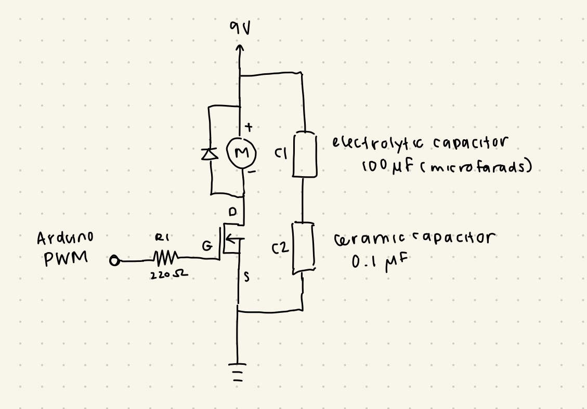
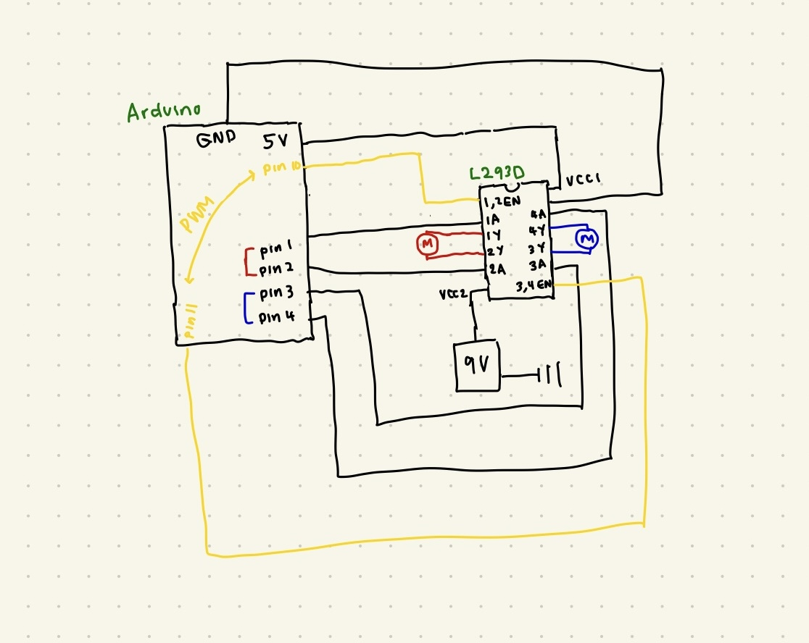

Here is all the documentation for assignment 5:
// Pin setup
const int trigPin = 8;
const int echoPin = 7;
// N MOSFET gate
const int motorPin = 9;
// value from sensor
long duration;
// convert to distance value
int distance;
void setup() {
// start serial monitor
Serial.begin(9600);
// setting up pins
pinMode(trigPin, OUTPUT);
pinMode(echoPin, INPUT);
pinMode(motorPin, OUTPUT);
}
void loop() {
// Send pulse to trigger pin
// Trigger pin off for 2 microseconds
digitalWrite(trigPin, LOW);
delayMicroseconds(2);
// Trigger pin on for 10 microseconds
digitalWrite(trigPin, HIGH);
delayMicroseconds(10);
// Trigger pin off
digitalWrite(trigPin, LOW);
// Measure time in microseconds the pin stays HIGH(travel time of pulse)
duration = pulseIn(echoPin, HIGH);
// Convert duration(from object and back)to distance (cm)
// using speed of sound value
distance = duration * 0.034 / 2;
// Print in serial monitor
Serial.print("Distance: ");
Serial.print(distance);
Serial.println(" cm");
// Control motor based on distance
if (distance < 20) { // Object within 20 cm
// motor on(slightly decreased speed)
analogWrite(motorPin, 200);
} else {
// off
analogWrite(motorPin, 0);
}
// delay for easier reading
delay(200);
}
1. The maximum amount of current between pins 2 and 3(drain and source) is 37.2A. I found it under the maximum ratings section for continuous drain current.
2.
3.

// (my naming conventions for the pseudo code are off for the sake of matching with my schematic labels)
int enA = 10;
int 1A = 1;
int 2A = 2;
int enB = 11;
int 4A = 3;
int 3A = 4;
void setup() {
pinMode(enA, OUTPUT);
pinMode(1A, OUTPUT);
pinMode(2A, OUTPUT);
pinMode(enB, OUTPUT);
pinMode(3A, OUTPUT);
pinMode(4A, OUTPUT);
}
void loop() {
// Both forward
digitalWrite(1A, HIGH);
digitalWrite(2A, LOW);
digitalWrite(3A, HIGH);
digitalWrite(4A, LOW);
analogWrite(enA, 255);
analogWrite(enB, 255);
delay(2000);
// Both backward
digitalWrite(1A, LOW);
digitalWrite(2A, HIGH);
digitalWrite(3A, LOW);
digitalWrite(4A, HIGH);
analogWrite(enA, 255);
analogWrite(enB, 255);
delay(2000);
// Motor A forward, Motor B backward
digitalWrite(1A, HIGH);
digitalWrite(2A, LOW);
digitalWrite(3A, LOW);
digitalWrite(4A, HIGH);
analogWrite(enA, 255);
analogWrite(enB, 255);
delay(2000);
// Motor A backward, Motor B forward
digitalWrite(1A, LOW);
digitalWrite(2A, HIGH);
digitalWrite(3A, HIGH);
digitalWrite(4A, LOW);
analogWrite(enA, 255);
analogWrite(enB, 255);
delay(2000);
}
4. In this assignment I used chatGPT for troubleshooting my circuit and arduino code. I was having an issue with my motor starting and losing connection with my board, and looked at possible fixes on ChatGPT, I ended up adding a flyback diode to my circuit which fixed the issue. I also used it to review concepts while drawing my schematics.